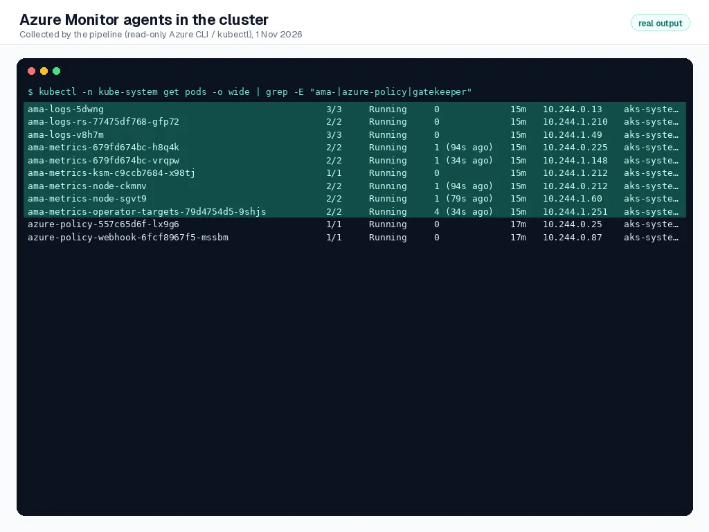
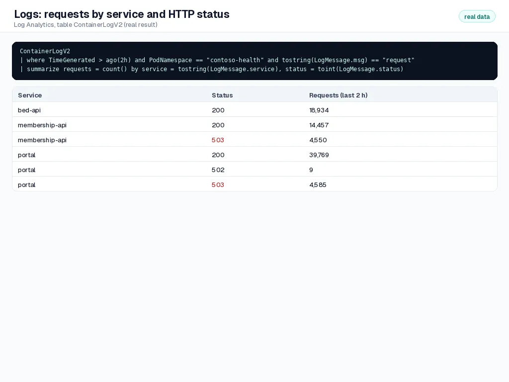
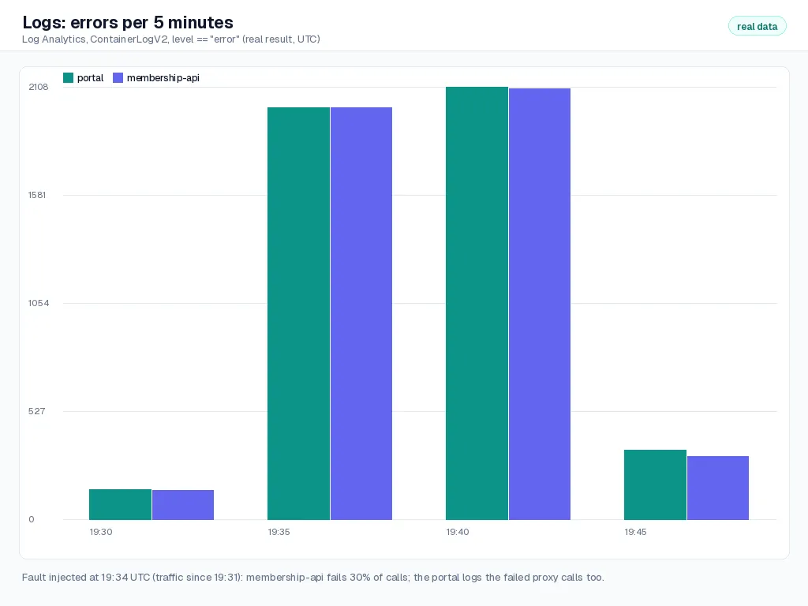
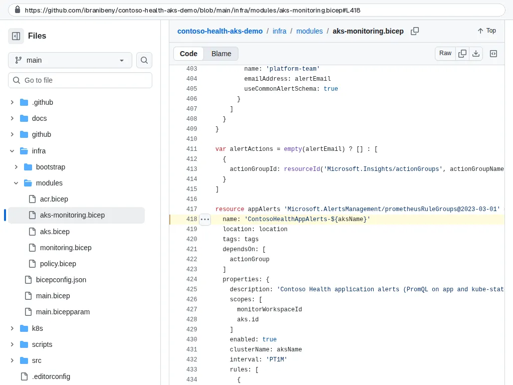
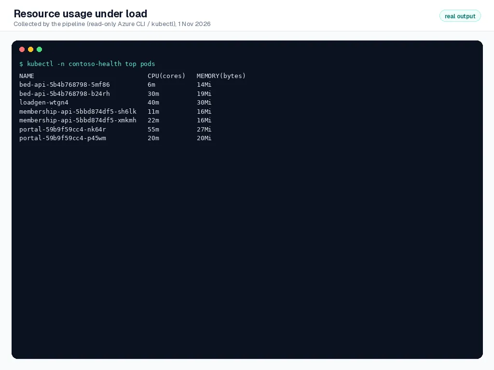
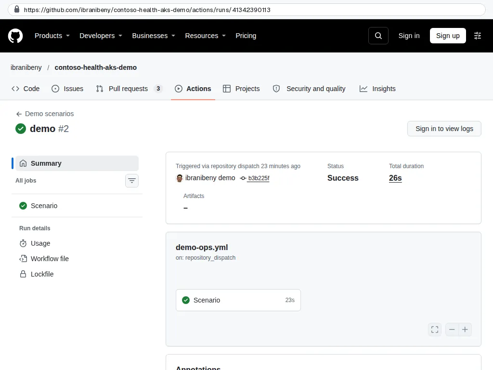
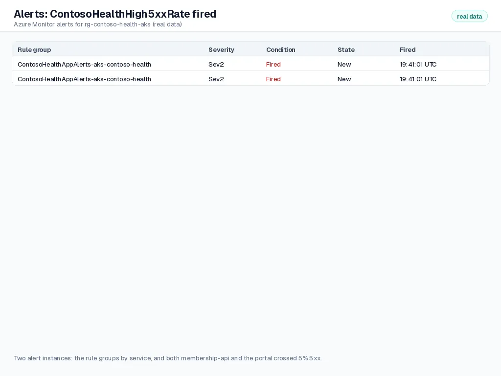

Step 8 of 10
Monitor the cluster and the app
Bicep turned on two pipelines: managed Prometheus for metrics and Container insights for logs. Explore them in the portal, generate traffic, break one service on purpose, and watch the alert fire and resolve.
Transcript (English)
Step eight. Monitoring was switched on by the template. Now we break something, on purpose, and watch it surface.
Two agents run in the cluster: A M A metrics scrapes Prometheus metrics, and A M A logs collects container logs.
The alert rules are code too: a Prometheus rule group in the monitoring module.
The demo scenarios workflow starts a load test, and then injects a fault: thirty percent of membership A P I calls now fail.
In Log Analytics, the requests by service and status show the five-oh-threes from the fault.
Errors per five minutes jump right after the fault, at nineteen thirty four U T C.
Seven minutes later, the high five x x rate alert fired, once for each affected service.
And resource use stays small under this load: a few millicores per pod.
Transcript (Bahasa Indonesia)
Langkah delapan. Monitoring sudah diaktifkan oleh templat. Sekarang kita sengaja merusak sesuatu, dan melihat masalahnya muncul.
Dua agent berjalan di cluster: A M A metrics mengambil metrik Prometheus, dan A M A logs mengumpulkan log container.
Aturan alert juga berupa kode: sebuah rule group Prometheus di modul monitoring.
Workflow Demo scenarios memulai uji beban, lalu menyuntikkan gangguan: tiga puluh persen panggilan ke membership A P I kini gagal.
Di Log Analytics, request per layanan dan status menunjukkan error lima nol tiga dari gangguan tersebut.
Error per lima menit melonjak tepat setelah gangguan, pukul 19.34 U T C.
Tujuh menit kemudian, alert high five x x rate terpicu, sekali untuk setiap layanan yang terdampak.
Dan pemakaian resource tetap kecil dengan beban ini: beberapa millicore per pod.
What you will do#
- Read cluster, node and container health in Container insights.
- Query application logs with KQL.
- Query application metrics with PromQL and open the Grafana dashboards in the portal.
- Fire an alert with an injected fault, then clear it.
This step ran fully automated: the GitHub API and the workflows in this repository did the work. The screenshots are public GitHub and app pages captured by the Guide evidence workflow, and the data frames show real output that the pipeline read back from Azure (read-only). The numbered instructions describe the same actions in the portal and GitHub UI.
Container insights#
- Open
aks-contoso-health, Monitoring, Insights. - Use the Cluster, Nodes, Controllers and Containers tabs. Filter the namespace
contoso-health. - Select a container and open Live logs to stream its output.
In the recorded run
The Azure Monitor agents run in the cluster: ama-metrics for Prometheus, ama-logs for Container insights.

Pipeline output
Query logs with KQL#
- Open Monitoring, Logs, close the query gallery and switch to KQL mode.
- Paste a query below and select Run. The services write one JSON line per request, so fields such as
level,statusandserviceare queryable.
In the recorded run
Log Analytics: requests by service and status. The 503s are the injected fault.

Pipeline output Errors per 5 minutes jump right after the fault at 19:34 UTC.

Pipeline output
ContainerLogV2
| where TimeGenerated > ago(30m)
| where PodNamespace == "contoso-health"
| where tostring(LogMessage.level) == "error"
| summarize errors = count() by service = tostring(LogMessage.service), bin(TimeGenerated, 1m)
| render timechartContainerLogV2
| where TimeGenerated > ago(30m)
| where PodNamespace == "contoso-health" and tostring(LogMessage.msg) == "request"
| summarize requests = count() by service = tostring(LogMessage.service), status = toint(LogMessage.status)
| order by service asc, status ascMetrics and Grafana dashboards#
- On the cluster, open Monitoring, Dashboards with Grafana. The built-in Kubernetes dashboards (compute resources by cluster, namespace, pod) read from managed Prometheus.
- To query the app metrics, open the Azure Monitor workspace
amw-contoso-health, Prometheus explorer, and run the PromQL below.
In the recorded run
Alert rules are code: a Prometheus rule group in aks-monitoring.bicep.

Repository code Resource use under load stays small: a few millicores per pod.

Pipeline output
# Requests per second by service and HTTP status
sum by (service, status) (rate(contoso_http_requests_total[5m]))
# Share of 5xx responses per service (the alert fires above 0.05 for 5 minutes)
sum by (service) (rate(contoso_http_requests_total{status=~"5.."}[5m]))
/ sum by (service) (rate(contoso_http_requests_total[5m]))
# 95th percentile latency per service
histogram_quantile(0.95, sum by (le, service) (rate(contoso_http_request_duration_seconds_bucket[5m])))
# Available beds per class, across all hospitals
contoso_beds_availableThe Grafana dashboards and the Prometheus explorer need a signed-in portal session, so they are described rather than recorded here. Querying the Azure Monitor workspace from the pipeline would also need the Monitoring Data Reader role, which the deployment identity deliberately does not have.
Fire an alert and clear it#
- In GitHub open Actions, Demo scenarios, Run workflow, choose
traffic. A Kubernetes Job sends requests for 10 minutes. - Run it again with
fault-on:membership-apinow fails 30% of its API calls. - After 5-10 minutes, open Monitor, Alerts: ContosoHealthHigh5xxRate has fired for
membership-api. The bed pages keep working: the failure is contained to one service. - Run
fault-off. The alert resolves on its own after the error rate drops.
In the recorded run
Demo scenarios: traffic starts a load test, fault-on makes membership-api fail 30 percent of calls.

GitHub Seven minutes later ContosoHealthHigh5xxRate fired, once per affected service.

Pipeline output
Check your work#
- Container insights shows both nodes and all
contoso-healthpods. - The KQL queries return rows for all three services.
- The PromQL query for requests per second returns series for
membership-api,bed-apiandportal. - The 5xx alert fired during
fault-onand resolved afterfault-off.
How it works#
Two pipelines, one agent family. The cluster runs the Azure Monitor agents: ama-metrics scrapes Prometheus metrics (node, kube-state and the app pods annotated prometheus.io/scrape in contoso-health) and sends them through a data collection endpoint and rule to the Azure Monitor workspace; ama-logs collects container stdout and Kubernetes inventory into Log Analytics using the ContainerLogV2 schema. Both authenticate with managed identity.
Alerts as code. The alert rules are PromQL in a Prometheus rule group in Bicep, reviewed and deployed like any other change. Recording rules from the official templates feed the built-in dashboards. Set ALERT_EMAIL to route alerts to an action group.
Control-plane audit. A diagnostic setting sends kube-audit-admin, guard and cluster-autoscaler logs to Log Analytics, so you can see who changed what in the cluster.
Troubleshooting#
| Symptom | Fix |
|---|---|
| No app metrics in Prometheus | Check that ama-metrics-settings-configmap exists in kube-system and the pods carry the scrape annotations; allow a few minutes after the first deployment. |
| Logs table empty | Container insights starts collecting a few minutes after the cluster is created. Check the data collection rule association on the cluster. |
| Alert does not fire | The rule needs 5 minutes above 5% plus evaluation time. Keep traffic running while fault-on is active. |